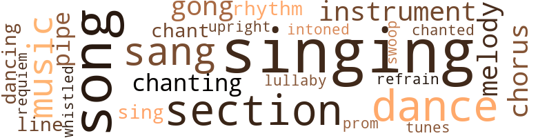
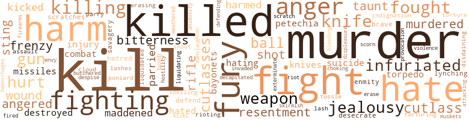
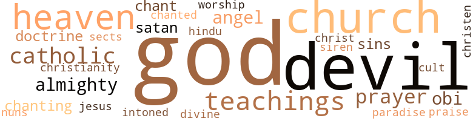

First Night (The), by Rasmussen, E. Michael (1947)
82 music-related terms matched in this text.
Most frequent terms in this topic: singing (13); song (9); dance (6); section (6); sang (5)
chorus.n.01
Definition: any utterance produced simultaneously by a group
| word | sentence |
|---|---|
| chorus | The chorus , " Why , why , why , " conveys their belief in witchcraft . |
| chorus | A tumultuous roar came from without , a chorus of voices in melody of song rang out , at times soft , low and sweet , then again swelling in harmony that filled the air , until the listeners felt its rhythm and hummed in unison . |
| chorus | Upon seeing the foreigner , the singing grew in intensity , followed by a swaying of hands and heads as the words rolled on the breeze in a chorus of sweet melody : " Master we bring you the essence of love , The honey to sip from its flower . |
dance.n.01
Definition: an artistic form of nonverbal communication
| word | sentence |
|---|---|
| dance | He began a sort of muscle dance , which continued for about twenty minutes , by which time he was perspiring profusely . |
| dance | In fact , they were resentful of having been sent away from the scene of the dance ; these ceremonies had been increasing in frequency of late . |
| dance | He rested the paper on his desk to ask : " What is this dance in which the fellow indulges ? |
| dance | I tell you , gentlemen , there is nothing so joyous to the eye as a bevy of Apollos in rhythmic dance . |
| dance | The whole dance was meant to excite one sexually . |
| dance | After the dance of the fairies , the two white men left the night club , and proceeded to do a little more slum - ming . |
dance.v.03
Definition: skip, leap, or move up and down or sideways
| word | sentence |
|---|---|
| dancing | Upon seeing the women dancing around the huge bottle , uttering in hushed words . |
| dancing | ... To better quote him , in his report to Judge Wellejus at the trial of the women , he said : " I was returning for duty when I saw six tall figures dressed in white , dancing around a demijohn that had been placed at the entrance to the Fort , and so arranged , that what appeared to be oil flowed slowly therefrom and had already partly covered the entrance . |
gong.n.01
Definition: a percussion instrument consisting of a metal plate that is struck with a softheaded drumstick
| word | sentence |
|---|---|
| gong | A gong sounded , somewhere , adding solemnity to the occasion . |
| gong | Again the gong , then the odor of incense filled the air . |
| gong | The gong again . |
intonation.n.03
Definition: the act of singing in a monotonous tone
| word | sentence |
|---|---|
| chanting | As the door closed behind him , the evil chanting again filled the night . |
lullaby.n.01
Definition: a quiet song intended to lull a child to sleep
| word | sentence |
|---|---|
| lullaby | She sang a lullaby , and rocked the dead child in her arms , as though it were alive . |
music.n.01
Definition: an artistic form of auditory communication incorporating instrumental or vocal tones in a structured and continuous manner
| word | sentence |
|---|---|
| music | The water running down the hillside sounded like soft music to his ears , and made him eager to get undressed and plunge into its cooling and refreshing depths . |
| music | This he would blow at intervals of about sixty seconds , repeating again and again his weird music , as though he were blowing to the moon . |
| music | Then Lorenson remembered the " night moan , " the name by which the natives described this music . |
| music | Now let us wander where we will on these , our newly-owned islands , for its history herein is as music played in symphonic renditions . |
musical_instrument.n.01
Definition: any of various devices or contrivances that can be used to produce musical tones or sounds
| word | sentence |
|---|---|
| instrument | It was she who caused it , " he said , pointing to Clementina , " but only as the instrument for God so must have desired it should be . |
| instrument | This done , he admonished them as follows : " Cowards , it is true that the law of your forefathers decreed that a prisoner be set free in the event that the instrument of death shall by some means or other fail in meting out the punishment by dying before the execution . |
| instrument | D'mitri had finally succeeded in becoming a permanent instrument for evil in the islands which harbored him once more . |
pipe.n.04
Definition: a tubular wind instrument
| word | sentence |
|---|---|
| pipe | Offering a box of cigars which Lorenson declined , ( say - ing that he preferred his pipe if the judge did not mind ) , Wellejus took one and lit it , the traveler doing likewise with his pipe . |
| pipe | Offering a box of cigars which Lorenson declined , ( say - ing that he preferred his pipe if the judge did not mind ) , Wellejus took one and lit it , the traveler doing likewise with his pipe . |
| pipe | Just as a child would blow the bubbles from her pipe in play , those billows swelled ; up , up they went , and then some more . |
promenade.n.01
Definition: a formal ball held for a school class toward the end of the academic year
| word | sentence |
|---|---|
| prom | Father Dominic had a prom - inent forehead with plenty of space between the eyes , and his chin , like chiseled marble , showed determination to conquer ; and he had never failed . |
refrain.n.01
Definition: the part of a song where a soloist is joined by a group of singers
| word | sentence |
|---|---|
| refrain | Why , why , why ? " the end of the refrain , " Why , why , why , the policeman take Braffitt in han ? " |
requiem.n.02
Definition: a musical setting for a Mass celebrating the dead
| word | sentence |
|---|---|
| requiem | A buoy kept tolling warnings of the shoal , and now sounded much like a requiem for the dead . |
rhythm.n.04
Definition: the arrangement of spoken words alternating stressed and unstressed elements
| word | sentence |
|---|---|
| rhythm | The labored breathing , the heavy panting like a wild animal sounds in rhythm with the shovel , shovel , shovel . |
| rhythm | A tumultuous roar came from without , a chorus of voices in melody of song rang out , at times soft , low and sweet , then again swelling in harmony that filled the air , until the listeners felt its rhythm and hummed in unison . |
section.n.01
Definition: a self-contained part of a larger composition (written or musical)
| word | sentence |
|---|---|
| section | The doctor was a genial sort of person and lived in the town , whereas D'mitri , Kokobo and their followers lived in the country section of the island . |
| section | The country section was not policed . |
| section | The Russian doctor lived with Dr. Mortensen whose residence , a substantial brick house with galvanized roof - ing painted red , graced a section of the upper main street , adjoining the British telegraph office . |
| section | Then there was a booming of ashcans as the PT boat salted the waters all around the section . |
| section | This he would mount bare-back sitting on the extremity of the ass when the animal went downhill , then returning to its middle section on the climb . |
| section | Muttering something about not being able to enter a night club in a white section , the man took his seat and behaved himself . |
sing.v.02
Definition: produce tones with the voice
| word | sentence |
|---|---|
| sang | And as she sang her eyes shone in a vacant stare . |
| sang | She sang a lullaby , and rocked the dead child in her arms , as though it were alive . |
| sang | And as they moved along they sang in the vernacular of the island : " Dem Bajun gurls doan wash dey skin till de gut run dung . |
| sang | And as the blacks sang , " Why , why , why ? |
| sang | Becoming dizzier , the blacks locked hands as they whirled and sang until Ko - kobo came to the fore . |
| sing | And all this nonsense and sing - ing and noise , you and those foolish men of yours kept up last night . |
| sing | A very feminine male left his sister nymphs and proceeded to sing a song entitled : " My mother wanted a boy , and my father wanted a girl , so I came . " |
singing.n.01
Definition: the act of singing vocal music
| word | sentence |
|---|---|
| singing | Kokobo bided his time until the singing swirling blacks had in their centrifugal frenzy rotated a dozen times , he then jumped into the opening that had been awaiting him , which promptly closed as the black leader paused in the centre of the ring . |
| singing | As the sap from the venomous plant began to fill the vat the superstitious Negroes resumed their singing , " Dumbulah ! |
| singing | All this bedlam , this singing and mad whirl had succeeded in releasing a force that would save Kokobo from the penalty of the law , so they imagined . |
| singing | Seizing one of the huge pestles the black chief pounded the furiously smoking torch until the sparks flew in all directions ; then having assured himself that the fire had gone out by tramping on the embers with his bare feet , he picked up both lamps to the renewed rhythmic singing of , " Dumbulah , dumbulah ! |
| singing | A silence fell over everything , a stillness that was accentuated by the abrupt cessation of the mad singing that had so permeated everything but a moment before . |
| singing | Even when a group of light-skinned children on espying three of Kokobo 's men adjusting the loads on their donkeys ' backs , started singing : We do n't like ah nager , be darned if we do , His foot is like ah shovel an ' he ca n't wear ah shoe . . . . |
| singing | It was the singing of the fern-like leaves of a huge hog-plum tree rearing magnificently above them that had intruded and broken the spell . |
| singing | " Why is that singing ? " inquired Lorenson of D'mitri . |
| singing | The singing multitude consisted of hundreds of white barefoot men , women and children . |
| singing | Upon seeing the foreigner , the singing grew in intensity , followed by a swaying of hands and heads as the words rolled on the breeze in a chorus of sweet melody : " Master we bring you the essence of love , The honey to sip from its flower . |
| singing | Six men held this gorgeous burden of joy , and were moving slowly in unison with the singing to a spot beneath the window where Lorenson sat . |
| singing | The carriers , still singing , brought their charming burden and placed her at his feet , then retired . |
| singing | This served as a signal for the singing to cease . |
song.n.01
Definition: a short musical composition with words
| word | sentence |
|---|---|
| song | The standing corpse began to chant a sonorous , eerie song . |
| song | At the finish of her weird song , they removed the contents from the coffin . |
| songs | His poems included songs , odes , satires , tales , epis - tles , et cetera , as well as fables , partly original and partly translated from Fontaine , Florin and Arnault , on which his fame chiefly rests . |
| song | And as he listened to the same song over and over again , he resolved to ignore the law . |
| song | Even this song of contempt did not arouse the blacks to anger . |
| song | A very feminine male left his sister nymphs and proceeded to sing a song entitled : " My mother wanted a boy , and my father wanted a girl , so I came . " |
| song | This song occasioned much laughter . |
| song | A tumultuous roar came from without , a chorus of voices in melody of song rang out , at times soft , low and sweet , then again swelling in harmony that filled the air , until the listeners felt its rhythm and hummed in unison . |
| song | Now speeding up in tempo , the song vibrated its listeners , then died away to a hush , much like a sea of whispers , only to be repeated over and over again . |
| song | " The song explains itself . |
swoop.n.01
Definition: (music) rapid sliding up or down the musical scale
| word | sentence |
|---|---|
| swoop | Settling on the tree-tops and looking down at the bodies , they had eyes that never seemed to wink , but appeared to be waiting the right moment to swoop down upon the dead and feast on meat they so loved . |
tone.v.01
Definition: utter monotonously and repetitively and rhythmically
| word | sentence |
|---|---|
| chanted | They were burning sandal-wood as they chanted what sounded like a litany for the dead . |
| chant | The standing corpse began to chant a sonorous , eerie song . |
| intoned | " We are again the victims of one of those damned storms that is a perpetual source of trouble to us , " he intoned affecting a serious pose that only made him appear more ridiculous . |
| chant | And now these whites are on their march to town , and the dark natives chant aloud : " Country Bukra kum tu tung . " |
| chanting | And as the flames crackled and lit up the scene , hitherto silent forms be - came whirling , chanting black demons , circling from right to left and chanting , " Dumbulah ! |
| chanting | And as the flames crackled and lit up the scene , hitherto silent forms be - came whirling , chanting black demons , circling from right to left and chanting , " Dumbulah ! |
tune.n.01
Definition: a succession of notes forming a distinctive sequence
| word | sentence |
|---|---|
| melody | Miss not a page , there - fore , but dream on , for every part is melody , right to the very end . |
| lines | However , the fact of his being one of those ' idiot savants ' who shows dis - proportionate accomplishments along special lines , is a matter of which I am somewhat in doubt . |
| tunes | Why should such a person be subjected to so many misfor - tunes ? " |
| melody | A tumultuous roar came from without , a chorus of voices in melody of song rang out , at times soft , low and sweet , then again swelling in harmony that filled the air , until the listeners felt its rhythm and hummed in unison . |
| melody | Upon seeing the foreigner , the singing grew in intensity , followed by a swaying of hands and heads as the words rolled on the breeze in a chorus of sweet melody : " Master we bring you the essence of love , The honey to sip from its flower . |
| line | From this point , which was directly in line , with the area in which the gar fish feeds , we felt that our move - ments would go unobserved because we could hide be - neath this rock and from here command a view of the surrounding waters . " |
upright.n.02
Definition: a piano with a vertical sounding board
| word | sentence |
|---|---|
| upright | On his head he had placed the skull of a jackass , but he walked upright . |
whistle.v.01
Definition: make whistling sounds
| word | sentence |
|---|---|
| whistled | The intense pressure of the wind as it tore the leaves from their branches , scattering them in every direction ; the fury with which it whistled in its mad whirl , made Lorenson fear that he had perhaps tarried too long . |
289 violence-related terms matched in this text.
Most frequent terms in this topic: kill (22); murder (19); killed (15); fight (12); hate (10)
abrasion.n.01
Definition: an abraded area where the skin is torn or worn off
| word | sentence |
|---|---|
| scratches | Pretty soon he was divested of every - thing except his skin and even that was smeared all over with red splotches , scarlet scratches , marks from toe-nails and soles of feet hardened to a leather-texture from con - stant exposure to Mother Earth . |
| scratch | There was a livid scratch across his cheek where the abused girl 's nails had gone home . |
aggravation.n.02
Definition: unfriendly behavior that causes anger or resentment
| word | sentence |
|---|---|
| provocation | " There is something in what you say , " agreed Dr. Lowenthal , " for I understand that those fellows will use the knife to which that long chain is fastened , at the least provocation . " |
anger.n.01
Definition: a strong emotion; a feeling that is oriented toward some real or supposed grievance
| word | sentence |
|---|---|
| anger | " Kokobo ! " snapped the white man , pretending anger . |
| anger | With head com - pletely raised above the ground , the upper part of its body puffed out to balloon proportions , its anger intensified at having tasted of human blood , it hissed repeatedly . |
| anger | The boy , as Dr. Grovno tells , infuriated the newly-arrived beast by jabbing a poniard into his flanks and was greatly amused at the animal 's grunts and increasing anger . |
| anger | She kept her gaze on the placid waters spreading before her and as she looked her anger cooled , then meeting Lor - enson 's eye she smiled admiringly . |
| anger | But I who did not kill in anger , my children , I who but killed to maintain order will not be freed , I will be made to pound stones , or be sent across the ocean where a greater penalty awaits me . |
| anger | Even this song of contempt did not arouse the blacks to anger . |
| anger | And like all children in all parts of the world , these lighter native children , being unable to anger their brothers of the purer stock , thereupon desisted and ran merrily downhill , harkening to the sound of the school bell calling them to classes in the hollow , in the town . |
anger.v.02
Definition: become angry
| word | sentence |
|---|---|
| Angered | Angered that supersition should so affect the people , he commanded the guards to circle the crowd . |
| angered | It appeared that there were women who resented this display ; arriving on the scene , they were much angered as Darnay disappeared over the hill-top for more rum . |
| angered | This angered the man and he alternated between kicks and whip-lashes in an effort to break the spirit of this rebel . |
animosity.n.01
Definition: a feeling of ill will arousing active hostility
| word | sentence |
|---|---|
| animosity | AH country natives meet there in prayer . . . black and white alike ... no animosity within those doors . |
attack.v.02
Definition: attack in speech or writing
| word | sentence |
|---|---|
| attacking | This made him very angry and instead of attacking me he immediately left after promising to take revenge for what he called an insult . " |
bayonet.n.01
Definition: a knife that can be fixed to the end of a rifle and used as a weapon
| word | sentence |
|---|---|
| bayonets | Up the hill and on the run with bayonets fixed , led by a young lieutenant known as Hansen , the white sold - iers came from around the bend and charged . |
| bayonets | The blacks , upon seeing the muskets leveled at them with fixed bayonets glistening in the morning sun , immediately forgot their original intent to storm the court - house . |
blast.v.03
Definition: use explosives on
| word | sentence |
|---|---|
| shelling | And tomorrow they may be shelling us . " |
bleeding.n.01
Definition: the flow of blood from a ruptured blood vessel
| word | sentence |
|---|---|
| hemorrhages | He ordered the body removed to the hos - pital for an autopsy , later reporting my fellow policeman 's death as resulting from oedema and hemorrhages of the lungs . |
| bleeding | The nails of his fingers were torn and bleeding , but he had only a vague sense of this . |
bombard.v.02
Definition: throw bombs at or attack with bombs
| word | sentence |
|---|---|
| bomb | No plane could bomb these hangars from the air . |
brush.n.06
Definition: a minor short-term fight
| word | sentence |
|---|---|
| skirmish | lorenson had learnt of the skirmish resulting in D'mitri 's death on that morning when he stepped from the huge Pan American plane as it arrived at its hangar at Mosquito Bay , now known as Lindbergh Bay . |
butcher.v.01
Definition: kill (animals) usually for food consumption
| word | sentence |
|---|---|
| butchered | They butchered him all right ! |
cloud.n.05
Definition: suspicion affecting your reputation
| word | sentence |
|---|---|
| cloud | You see the beauty ball of light is now completely blotted out by that dark cloud covering its face . |
contemn.v.01
Definition: look down on with disdain
| word | sentence |
|---|---|
| disdaining | They selected the shade of huge tamarind ( locally called tamun ) trees beneath which they built houses from lumber which they bought from the lumber yards in the town , disdaining to use the cheaper gin-case boxes of the Chachas . |
| scorn | Why , I never could feel other than deepest scorn and con - tempt for any of those brides . |
| despise | Frankly , Jensen , I do not fail to see but that hybrids make up a part of us therefore , why despise the very being for whose existence you are responsible ? " |
craze.n.02
Definition: state of violent mental agitation
| word | sentence |
|---|---|
| frenzy | They had not intended to murder him when they began the attack ; but in their frenzy and at the sight of the man 's blood , they had for - gotten their original purpose and were propelled by the fury of the " pack spirit . " |
| frenzy | He resumed : " Mrs. La Place , you are accused of having incited these women present to a stale of frenzy that resulted in an attack on the deceased male , Dodo Darnay , a member of your set . |
| frenzy | Kokobo bided his time until the singing swirling blacks had in their centrifugal frenzy rotated a dozen times , he then jumped into the opening that had been awaiting him , which promptly closed as the black leader paused in the centre of the ring . |
cutlas.n.01
Definition: a short heavy curved sword with one edge; formerly used by sailors
| word | sentence |
|---|---|
| cutlass | This boy , wielding a cutlass of razor-edge keenness , sliced off the green crown of the nut at one stroke , releasing its most delicious water and jelly . |
| cutlasses | Chop , chop , chop , resounds on every side as sweating blacks swing cutlasses with a precision that comes from a lifetime of practice . |
| cutlass | Here and there can be seen shining Negroes , squat - ting on the ground and concentrating on what would seem to be the carving of the heels and toes of their feet with the huge blade of the cutlass . |
| cutlasses | And the men fastened with one chop their cutlasses in the hardwood then to listen to what their leader had to tell . |
| cutlass | " You know those blacks are very handy with the cutlass . " |
| cutlass | As the two policemen arrived at the first lookout , a huge black with a red bandanna handkerchief tied across his forehead and cutlass in hand , gave the first signal , a long , " Yu-a-hoo ! |
| cutlasses | Yells filled the air ; infuriated blacks rushing with cutlasses in hand ran toward the road ; dogs barked and added to the pandemonium , entirely changing the scene to one of dis - advantage for the lone white man . |
| cutlasses | The other sound came from the swish of cutlasses of the men trimming the roadway as they advanced , clearing a path in the thick growth . |
decapitate.v.01
Definition: cut the head of
| word | sentence |
|---|---|
| decapitated | Mention is made * of how , attired in an old army coat given him by the Governor , which had gold epaulets , the huge black was decapitated by an antagonist , thus ending his loyal and eventful career in the service of his King . |
desecrate.v.01
Definition: violate the sacred character of a place or language
| word | sentence |
|---|---|
| desecrate | Kokobo 's willingness to permit the archaeologist to desecrate the resting place of what other tribes would have regarded as consecrated ground was conspicuously unusual ; but these people , it appeared , used their dead as fertilizer . |
destroy.v.04
Definition: put (an animal) to death
| word | sentence |
|---|---|
| destroyed | This disease , sir , was the cause of the epidemic of ' Black Death ' which raged in the Middle Ages , and destroyed about one-third of the population . " |
| destroyed | Finding that the heavy ground-seas and severe hurri - canes destroyed the cheaply built homes which they had constructed mostly from large wooden boxes and covered with thatched roofing , these people thereupon proceeded to rebuild into the interior of the bush . |
displeasure.n.01
Definition: the feeling of being displeased or annoyed or dissatisfied with someone or something
| word | sentence |
|---|---|
| displeasure | Lorenson again inquired with renewed emphasis , this time making no attempt to conceal his displeasure . |
envy.n.01
Definition: a feeling of grudging admiration and desire to have something that is possessed by another
| word | sentence |
|---|---|
| envy | " I should have been the one , " Dodo Darnay kept muttering to himself as he watched the swinging outer door with envy , but no will . |
erase.v.01
Definition: remove from memory or existence
| word | sentence |
|---|---|
| erasing | Dr. Orpheus Evert , another well-known authority , was likewise unaware of the existence of a people of the white race called by the natives " Chachas , " ( the local name for these supposed exiles from Normandy , their original home ) , who endeavored to effect a cure by erasing two anti-social characters by the same method to which he once called attention , but did not necessarily advocate . |
| erase | Nothing that the Judge did to erase the sickening odor was effective on that day . |
exterminate.v.01
Definition: kill en masse; kill on a large scale; kill many
| word | sentence |
|---|---|
| exterminate | Kokobo 's attempt to exterminate the officials of the island met with a snag in the arrest of his emissaries of death . |
fight.n.02
Definition: the act of fighting; any contest or struggle
| word | sentence |
|---|---|
| fighting | While in India , one sees the natives in their poverty fighting and hating each other because of a foolish caste system that has as its roots religious differences - which prevent a merging of common virtues for the combined good - so in the Virgin Islands do we find a mixed people , admittedly Negroes ( and so regarded by their white brothers ) pulling in opposite directions and fighting each other socially with a surprising vehemence , and physi - cally , in some instances , as above exemplified . |
| combat | The thin veneer of civilization or culture , if one may so term it , had all but melted in the heat of the combat of love . |
| combat | " Yes , for a long time I have been fighting this thing ; now the combat is ended , I have decided that there is something for the time being above sex . |
fight.n.05
Definition: a boxing or wrestling match
| word | sentence |
|---|---|
| fight | It was giving him quite a fight as he attempted to lift it from the ground . |
| fight | This was a fight that anyone could enjoy , with the women getting the better of it . |
| fight | Up to this time the two sisters had listened to Captain O'Grady 's description of the fight with intense interest ; but a sad look had crept over the face of the dark girl . |
| fight | The moment the male dog appears there is a fight . |
fight.v.02
Definition: fight against or resist strongly
| word | sentence |
|---|---|
| fight | And Lorenson did not try to fight off the overpowering effects of her spiritual caresses , which seemed to have affected him as a magnet a pin . |
| fought | In the confines of his church , and in the closed doors of the school where we all met to pray and learn , there was always peace between us blacks and whites , but once be - yond the circle of these grounds we always fought . |
| fighting | Those in the rear of the crowd kept pushing against the ones in front , fighting for a view of the bowl . |
| defend | You should defend and admire me . |
| fight | This beast , " she continued , point - ing to D'mitri , " has not only ruined most of the young girls of my people but has so weakened you men that you will not rise and fight the outraging of your daughters on whom he so ruthlessly tramples to satisfy his lust . |
| fought | Each woman singled out her man , attacking with fingernails as they fought madly . |
| fought | It was a screaming , mad - dened horde of infuriated females , shouting their hate as they fought , tearing and biting madly the men whom they had found wanting and worthless . |
| fought | How they screamed and fought . |
| fighting | Meanwhile , he was fighting back furiously , but to no avail . |
| fight | Like a frightened creature finding itself run to earth and at bay , he turned and attempted to fight back , all to no avail . |
| fight | I was wondering how soon her torpedo would be launched , or if the U-boat would un - limber her deck gun and fight it out . |
| fought | The Governor wrote in his memoirs : " Our troops succeeded in landing under cover of darkness , but in the morning the Dutch settlers becoming aware of our pres - ence and intentions , armed themselves and fought so desperately in defense of the land , that our chance of taking the island appeared hopeless . |
| fight | ' You can not fight the law . |
| fighting | This time , however , they came and sallied into the crowd with night-sticks swing - ing and rebounding off the matted heads of surging , fighting men and shrieking women . |
| fought | The crowd , however , fought its way up hill to the entrance , pushing back the small defending force of white and black policemen . |
| fighting | While in India , one sees the natives in their poverty fighting and hating each other because of a foolish caste system that has as its roots religious differences - which prevent a merging of common virtues for the combined good - so in the Virgin Islands do we find a mixed people , admittedly Negroes ( and so regarded by their white brothers ) pulling in opposite directions and fighting each other socially with a surprising vehemence , and physi - cally , in some instances , as above exemplified . |
| fight | My dear girl , " he added with a pitying look , " you are a mother now , therefore , you have some - thing for which to live and fight . |
| defending | Rasmussen did not at that time remotely suspect that the very girl he had been discussing and defending would so soon have faced him as he saw her this morning . |
| fighting | " ' Are you back with that same foolishness again , ' I screamed , fighting and clawing at his face . |
| fight | Gone was that will to fight . |
| fighting | " Yes , for a long time I have been fighting this thing ; now the combat is ended , I have decided that there is something for the time being above sex . |
| fight | A man must fight when once he has the strength and will to do . |
| fighting | She was fighting him from what one could hear . |
firearm.n.01
Definition: a portable gun
| word | sentence |
|---|---|
| firearms | So it happened that two policemen , with no firearms , a horse and a rope , proceeded into the country for their man . |
fury.n.01
Definition: a feeling of intense anger
| word | sentence |
|---|---|
| fury | Fishes of all kinds were strewn all about the ground where the tidal wave had swept in its fury . |
| fury | In hysterical fury she threw herself upon D'mitri . |
| fury | They had not intended to murder him when they began the attack ; but in their frenzy and at the sight of the man 's blood , they had for - gotten their original purpose and were propelled by the fury of the " pack spirit . " |
| fury | Hell hath no fury like a frenzied mob of women . |
| fury | The St. Thomas women regarded Darnay as a reptile and in their fury had stepped beyond the bounds that would have , in their opinion , rendered him safe for their community . |
| fury | The intense pressure of the wind as it tore the leaves from their branches , scattering them in every direction ; the fury with which it whistled in its mad whirl , made Lorenson fear that he had perhaps tarried too long . |
| fury | The fury of hell let loose ! |
| fury | Lorenson actually felt dizzy as he surveyed this flow - ing power of outgoing fury pulling so many things to destruction . |
| fury | A child of fury returned to its mother 's bosom . |
gag.v.06
Definition: cause to retch or choke
| word | sentence |
|---|---|
| choking | " My love ! " she then exclaimed , her voice choking with emotion , " Night has not yet fallen . " |
gun.n.01
Definition: a weapon that discharges a missile at high velocity (especially from a metal tube or barrel)
| word | sentence |
|---|---|
| gun | Suddenly the submarine saw her danger , but the fifty - calibre anti-aircraft gun was enfilading her with a fusilade that spat with a thousand flashes as the steel bullets per - forated her metal side . |
| gun | I was wondering how soon her torpedo would be launched , or if the U-boat would un - limber her deck gun and fight it out . |
| guns | What is more we carry no guns . " |
| gun | " When a man takes a knife in hand and runs it into his victim 's heart he kills ; when a man takes a gun and blows off the head of his brother he kills ; but when a man summons the Spirit of Dumbulah and this evil one goes forth and slays , it is not that man who kills but the Spirit of Dumbulah . " |
| gun | You amplified this by adding that , ' When a man takes a gun and blows off the head of his brother , he kills . ' |
harm.v.01
Definition: cause or do harm to
| word | sentence |
|---|---|
| harm | " I can promise you a rare treat at the dawn ; then you shall see how Kokobo deals with those who would harm him and the ones he loves . " |
| harmed | He hid himself in that tall tree and would have , no doubt , harmed the girl but for my dog who smelled him out and brought him to his fate . |
| harmed | And I am doing this for your sake , for if I be harmed , then , you too , my children , will suffer because you will be left alone without a leader , and this must never be . |
| harms | ' Please remove the rope and handcuffs ; I shall see that he goes with you peacefully and that no one harms you . |
| harm | " Do n't be silly , the dead can harm no one . |
| harm | " I hate to say it , " remarked Clementina , " but if he went down there intending to harm me and could n't get out after setting the fire , it would serve him right if he got roasted . |
| harm | The question is , why do n't they harm the women ? " |
hassle.n.02
Definition: disorderly fighting
| word | sentence |
|---|---|
| tussle | Each man singled out as best he could the one belonging to him and after a brief tussle , dragged her home . |
hate.n.01
Definition: the emotion of intense dislike; a feeling of dislike so strong that it demands action
| word | sentence |
|---|---|
| hatred | From the eyes of Zabetha also flashed a look of hatred . |
| hate | Rob a woman of her virtue then discard her and you will arouse within her a flame like that of an acetylene torch that will forever reach out to consume you with its tongue of hate . |
| hate | Not the kind light a woman shows upon seeing a lover , but one of hate coupled with delight in seeing an enemy apprehended . |
| hate | Her face scowled with the hate that only a woman could so well portray . |
| hate | Here was an expression which some deep-rooted cause for hate had generated . |
| hate | It was a screaming , mad - dened horde of infuriated females , shouting their hate as they fought , tearing and biting madly the men whom they had found wanting and worthless . |
| hate | Death had taken all the fires of hate away . |
hate.v.01
Definition: dislike intensely; feel antipathy or aversion towards
| word | sentence |
|---|---|
| hate | Lorenson could understand the cause for the joy of the girls , but he could see no earthly reason why the mob should so hate this man as to express itself in like manner , when it was aware of the relationship of Clementina to its race and to that of Kokobo . |
| hate | Then he would turn and look at Clementina with the same silent appeal only to meet with a rebuff , answered by a return look which clearly con - veyed , " You are about to get what you long ago deserved , you beast , I hate you ! " |
| hated | They intended to teach the white policemen a lesson , and at the same time drive from out of the courtroom the hated city blacks who were hogging the seats . |
| hated | Thus , did the soldiers end a riot that had as its ulterior purpose , not so much the beating up of the force repre - senting law and order , but rather the expelling of their fellow blacks of the city ; brother blacks they hated more because of their superior ways . |
| hating | While in India , one sees the natives in their poverty fighting and hating each other because of a foolish caste system that has as its roots religious differences - which prevent a merging of common virtues for the combined good - so in the Virgin Islands do we find a mixed people , admittedly Negroes ( and so regarded by their white brothers ) pulling in opposite directions and fighting each other socially with a surprising vehemence , and physi - cally , in some instances , as above exemplified . |
| hate | I would hate to think that he should come to such a horrible end , because after all , the man was not in his right senses , you know . " |
| hate | " I hate to say it , " remarked Clementina , " but if he went down there intending to harm me and could n't get out after setting the fire , it would serve him right if he got roasted . |
| hating | The girl now rose to her feet , but the Dane hesitated as though hating to leave this spot of their many rendez - vous . |
hostility.n.01
Definition: a hostile (very unfriendly) disposition
| word | sentence |
|---|---|
| hostility | I can well understand the hostility under these circumstances . |
hostility.n.02
Definition: a state of deep-seated ill-will
| word | sentence |
|---|---|
| enmity | Obviously , the teachings of Father Dominic did not much influence the bitter enmity prevailing among these people . |
indignation.n.01
Definition: a feeling of righteous anger
| word | sentence |
|---|---|
| indignation | They seemed to have felt the responsibility was on their shoulders and they were carrying it out with savagery , the result of piled-up indignation that had burst like a boil . |
infuriate.v.01
Definition: make furious
| word | sentence |
|---|---|
| infuriated | It was a screaming , mad - dened horde of infuriated females , shouting their hate as they fought , tearing and biting madly the men whom they had found wanting and worthless . |
| infuriated | The boy , as Dr. Grovno tells , infuriated the newly-arrived beast by jabbing a poniard into his flanks and was greatly amused at the animal 's grunts and increasing anger . |
| infuriated | Kokobo 's resistance was mild and availed him little as the infuriated policeman pulled the Negro 's hands behind him , fastening the handcuffs thereon . |
| infuriated | Yells filled the air ; infuriated blacks rushing with cutlasses in hand ran toward the road ; dogs barked and added to the pandemonium , entirely changing the scene to one of dis - advantage for the lone white man . |
| infuriated | Rasmussen in the meanwhile had been concentrating on getting the heavy weight of Mani Cruz across his horse 's saddle , and having succeeded was about to mount his own , when the infuriated blacks bore down on him . |
injury.n.01
Definition: any physical damage to the body caused by violence or accident or fracture etc.
| word | sentence |
|---|---|
| harm | I am sure you meant no harm , lady . " |
| harm | We are going to do to you now what will forever rob you of the chance of ever commiting any more harm . |
| injury | This , however , is due to a traumatic condition , an injury received on the head when as a boy he was mauled by a bear . " |
| harm | In fact , I will also go along to insure your getting through the roads without harm . ' |
| harm | " My position as Judge gives me no alternative but to order Kokobo placed where he will not be able to do more harm to his kind . |
| injury | The injury was insignificant , but the throb - bing of hearts was significant . |
| hurt | Seeing their favorite , Zabetha , hurt and being tenderly carried by the white man pacified them . |
| harm | " But he appeared not even to have heard me , for he dealt me a resounding slap on the back , and with eyes flashing pressed his face to mine and said : ' Stop your mad clawing and no harm will come to you . |
invade.v.01
Definition: march aggressively into another's territory by military force for the purposes of conquest and occupation
| word | sentence |
|---|---|
| invaded | This man nevertheless invaded our waters and began catching our fish , violating the law by using the huge seine ( fish-net ) not allowed by the Conservation Commission . |
jealousy.n.01
Definition: a feeling of jealous envy (especially of a rival)
| word | sentence |
|---|---|
| jealousy | A flash of jealousy ; a face turned scarlet . |
| jealousy | In the one form it becomes the Oedipus Complex in which the son with his frustrated emotions directed erotically upon the mother develops a usurping jealousy for the father . |
| jealousy | Yes , Doctor , if I am not interfered with , because of jealousy on the part of those who are envious of the superior future race that will come to the islands as the result of my mating , you shall see . |
| jealousy | And I would have made Gods of them and shall yet do this , I tell you , if jealousy does not intervene and spoil the shaping of the full artistic expression of my soul . " |
| jealousy | However , I would n't call it jealousy , I would say I am merely ascertaining the degree of security I may associate with you . " |
kick_back.v.02
Definition: spring back, as from a forceful thrust
| word | sentence |
|---|---|
| kicked | As he doubled up in fear , Kokobo kicked the brute who sheepishly sneaked away . |
| kicked | Kokobo thereupon kicked the two unfortunates out of reach of the fire . |
| kicks | This angered the man and he alternated between kicks and whip-lashes in an effort to break the spirit of this rebel . |
kill.v.10
Definition: cause the death of, without intention
| word | sentence |
|---|---|
| kill | " The Good Book of your people says ' thou shalt not kill , ' yet , you do not mind its teachings when a skunk gets in your path . |
| kill | Because he is as poison , and a snake , so you kill him . |
| kill | You see in him one who also re - moves his skin and crawls at night to kill a young child in the dark , then wallows in its blood all for a devil thrill . " |
| kill | I now command , that anyone of you my people , if ever he be found across the line , shall kill this rodent which the white law so far has not done . |
| killed | The famous Prussian Field Marshall Gebhard Von Blucher was conspicuously notorious , his many escapades having earned him a seat among the anti-socialites ; then there is Ben Johnson who killed an actor like himself and went to jail as a result . |
| killed | There was peace now , peace in the hearts of the ones who had killed him and from behind closed doors they softened at such loyalty . |
| kill | Nature was exerting every bit of energy she possessed to overpower his reason , to kill all decent inhibitions . |
| killed | They were inclined to let that incident go as unobserved where Kokobo had killed one of his men by spearing , in an endeavor to retain discipline , but when the women associated with D'mitri finally perpetrated the crime of cruelly disposing of one of their members , the necessity for taking action then became imperative . |
| killing | The narrative goes on to say : " We made short work of the remaining whites who still offered resistance , killing a few but capturing and making prisoners of most of them . " |
| killed | It is said that Kokobolo was finally killed in a battle with pirates who had attacked the island . |
| killed | If you know that you killed Dodo Darnay say , ' I plead guilty . ' |
| kill | On the other hand , if you are sure that you did not kill the man , you then say , ' not guilty . ' |
| kill | Honest to God , Judge , I did not mean to kill him . |
| kill | They were afraid of the power I wield over everyone with whom I come in con - tact , so they tried to kill me . |
| kill | You have determined that the cause of all the trouble is the crazy Russian and have removed him : I have con - cluded whije they were instrumental in a way , the women did not exactly kill the other moron . |
| kill | Arnica had but the day before said , to use his exact words : " Under Danish rule there is no capital punishment , so the Father - land imprisons , but does not kill its subjects or its citizens , even though they commit the extreme offense . |
| killed | And they also killed , though not as I ; but they are white and were released because of being the color of the Governor and the Judge , and the men who run the Government . |
| kill | But I who did not kill in anger , my children , I who but killed to maintain order will not be freed , I will be made to pound stones , or be sent across the ocean where a greater penalty awaits me . |
| killed | But I who did not kill in anger , my children , I who but killed to maintain order will not be freed , I will be made to pound stones , or be sent across the ocean where a greater penalty awaits me . |
| killed | The man I killed was but a mongoose , wild and foul like that rodent showing no respect for Kokobo and his guests . . . And as the black man spoke , clouds of dark gray smoke emerging from the covered pits billowed the scene , scenting the atmosphere with the not unpleasant perfume of burnt , green cashir-wood . |
| kill | The sap from this plant which resembles the green sugar-cane , if used as oil , will kill within a short time anyone inhaling its fumes . |
| killed | I have always felt that there was no need to have killed that man . |
| killed | You know the law of the land , yet in the face of this knowledge , you killed that man . |
| killed | Rasmussen : " Yes , as quiet as a snake ; so quiet he killed a man by running a spear through him . " |
| kill | If you kill that policeman , you will have the soldiers here , in no time . ' |
| kills | I will have you understand the one is wicked and kills and resorts to common things , that is the obi-man , while the magician works for good and helps those who can not help themselves . " |
| kill | " Then , why did you kill Mani Cruz , the policeman , if you are not an obi-man ? |
| kill | " I did not kill your policeman and no one can prove I did . |
| kill | Do I understand , " asked the Judge , " that you have set yourself up as the Omnipotent , that you , therefore , two nights ago decided to kill the Governor , his secretary and other heads of the Government by having these ignorant women here * pour oil in front of the residences of these officials just mentioned ? |
| kills | " When a man takes a knife in hand and runs it into his victim 's heart he kills ; when a man takes a gun and blows off the head of his brother he kills ; but when a man summons the Spirit of Dumbulah and this evil one goes forth and slays , it is not that man who kills but the Spirit of Dumbulah . " |
| kills | " When a man takes a knife in hand and runs it into his victim 's heart he kills ; when a man takes a gun and blows off the head of his brother he kills ; but when a man summons the Spirit of Dumbulah and this evil one goes forth and slays , it is not that man who kills but the Spirit of Dumbulah . " |
| kills | " When a man takes a knife in hand and runs it into his victim 's heart he kills ; when a man takes a gun and blows off the head of his brother he kills ; but when a man summons the Spirit of Dumbulah and this evil one goes forth and slays , it is not that man who kills but the Spirit of Dumbulah . " |
| kills | The Judge continued : " A moment ago you said , ' When a man takes a knife in hand and runs it into his victim 's heart , he kills . ' |
| kills | You amplified this by adding that , ' When a man takes a gun and blows off the head of his brother , he kills . ' |
| kill | No , no , Your Honor , Kokobo did not kill that man . |
| killed | The spirit took your hand and killed the evil spirit in your follower , but I notice that while imbued with your Good Spirit in the disposing of the Spirit of Evil , you also removed a human being . |
| killed | " In the language of the living , I am aware , Kokobo that you killed this man . |
| kill | Did he kill his fellowman by running him through with a spear ? |
| kill | I ask you women , did they kill their fellow man ? |
| kill | No , Mr. Lorenson , they do not kill under the Danish law , but I should much prefer to see him dead than placed in a crazy house . " |
| killed | " I hope it killed the bastard ! " shot back the traveler , as he struggled forward in his quest of Clementina . |
| killed | This poison had killed them . |
killing.n.01
Definition: an event that causes someone to die
| word | sentence |
|---|---|
| killing | Now , tell me Kokobo , you are ac - cused of having taken a spear and with it impaled one of your men , what would you call this , a killing or a gentle caress ? " |
killing.n.02
Definition: the act of terminating a life
| word | sentence |
|---|---|
| killing | This was not a mob of southern " crackers " yelling for an unfortunate Negro to be lynched , but a mob of tropical blacks imitating the universally accepted pastime below the Mason-Dixon Line ; for surely the offense did not justify killing of the woman 's husband . |
| kill | Lorenson thought Kokobo long-winded , for though the crowd kept clamoring for the kill , he continued to talk and explain to what seemed an unnecessary degree . |
| kill | Like wolverines they had gone in for the kill and over-performed the unpleasant job . |
| killing | " You are charged as ringleaders in the killing of Dodo Darnay , a member of your group . |
| killing | Again Judge Wellejus asked : " What do you plead to the killing of Dodo Darnay ? " |
| killing | You know that killing is punishable by long imprisonment , under the laws of the island , then why did you do it ? |
| killing | Frightened animals bleating and madly rushing as the dogs literally tore at the goats ' throats in an orgy of killing - caused the stranger to seek security in the nearest tree . |
knife.n.02
Definition: a weapon with a handle and blade with a sharp point
| word | sentence |
|---|---|
| knife | With this knife , to the Devil I shall send him when we meet , " finished Kokobo taking a few more gulps of rum . |
| knife | The crowd opened as though cloven by a mighty knife . |
| knife | The young Haitian went into the bush and with a heavy hunting knife peeled a considerable amount of bark from a turpentine tree . |
| knife | " When a man takes a knife in hand and runs it into his victim 's heart he kills ; when a man takes a gun and blows off the head of his brother he kills ; but when a man summons the Spirit of Dumbulah and this evil one goes forth and slays , it is not that man who kills but the Spirit of Dumbulah . " |
| knife | The Judge continued : " A moment ago you said , ' When a man takes a knife in hand and runs it into his victim 's heart , he kills . ' |
| knife | " There is something in what you say , " agreed Dr. Lowenthal , " for I understand that those fellows will use the knife to which that long chain is fastened , at the least provocation . " |
| knives | Another thing , I understand that the new fashion is to carry knives fastened to long chains . |
| knives | It is said that these knives are not just carried for adorn - ment . |
lynching.n.01
Definition: putting a person to death by mob action without due process of law
| word | sentence |
|---|---|
| lynching | Marrying a woman is not punishable by death ; this , therefore , would be a lynching pure and simple . |
madden.v.03
Definition: make mad
| word | sentence |
|---|---|
| maddened | The reptile was maddened now . |
| maddened | They turned and ran like maddened men and women , bowling one another over and trampling on the the weaker ones in their feverish haste to escape the crack of the rifles . |
manslaughter.n.01
Definition: homicide without malice aforethought
| word | sentence |
|---|---|
| manslaughter | In all three islands there were only two cases of manslaughter and the Dis - trict Court and the Police Courts tried cases promptly and there was no delay nor congestion in handling the dockets . |
murder.n.01
Definition: unlawful premeditated killing of a human being by a human being
| word | sentence |
|---|---|
| murder | There was murder in the hearts of these she - devils . |
| murder | Picture a hundred or more angry women to whom you had given sufficient cause to murder you , surrounding you in your helpless - ness with fire in their eyes and switches in their hands . |
| murder | It must be remembered that Darnay had forfeited his right to enjoy the freedom of society by murder , and had roamed about much as a leopard would in search of prey - the lethargic Danes having done nothing about it . |
| murder | They had not intended to murder him when they began the attack ; but in their frenzy and at the sight of the man 's blood , they had for - gotten their original purpose and were propelled by the fury of the " pack spirit . " |
| murder | Their original desire had been curative , to heal , not to commit murder , but the subconscious mind or instinct had propelled them to crudely perform this as a therapeutic act . |
| murder | The only way the authorities had of becoming aware of serious trouble on the out-skirts , such as murder and rioting , was by grape-vine means of communication . |
| murder | " Herr Governor , I likewise understand from my white servant that there has also been a murder committed in the camp of her people which , as I understand , is located at Hull , " countered the secretary . |
| murder | But tell me of this murder , what have you learnt ? |
| murder | The Doctor said that as long as the authorities tolerated his charge and he did not murder anyone , he would be most grateful for their indulgence . " |
| murders | " It concerns the rumors I have been hearing of two murders on the outskirts of the town . |
| murder | " I note in this report that the Russian did not com - mit the murder as I understood . |
| murder | Mrs. La Place and her accomplices must appear before Judge Wellejus and account for the murder of Dodo Darnay . |
| murder | He will be taken on the morrow to the Fort where he will be locked up , then tried for the murder of one of his men . |
| murder | Sup - pose , Judge , you were in my place under the same cir - cumstances , and you were told to blow out a lamp under the same circumstances , and you said , ' If you want it out , you put it out , ' under the same circumstances could you be charged with murder ? |
| murder | I suppose if you were a drinking man and while under the influence of liquor committed an act of murder , you would then promptly associate the guilt with John Barleycorn . |
| murders | " Well , my good man , we recognize Mr. Barleycorn in spirit as a symbol , but since the law is unable to punish spirits and must , therefore , deal with things material , I shall be forced to hold you as the subject who committed these murders . " |
| murder | As you must realize , sir , law and order are at stake , if we overlook and thereby condone murder . |
| murder | Did he commit murder ? |
| murder | Well , he graci - ously invited me to lunch with him , after we had left the morning court , and I must tell you it is my candid belief that , but for my effort in persuading him to treat Ko - kobo with every consideration , it is probable that he would have been convicted and sentenced for murder . " |
| murder | " And what if Judge Wellejus had sentenced him for murder ? " asked the girl . |
| murder | If he had been sentenced for murder , they would simply have then sent him to Denmark , where , in the prison , he would have been taught a trade . |
murder.v.01
Definition: kill intentionally and with premeditation
| word | sentence |
|---|---|
| murdered | I understand that he re - cently murdered one of his men , in what he considered circumstances necessary to maintain discipline . |
| murdered | And it is for this same reason that I also had trouble with the women who murdered my boy . |
| murdered | You Ko - kobo , committed the extreme offense , by taking the law into your hands when you murdered one of your men . |
musket.n.01
Definition: a muzzle-loading shoulder gun with a long barrel; formerly used by infantrymen
| word | sentence |
|---|---|
| muskets | The blacks , upon seeing the muskets leveled at them with fixed bayonets glistening in the morning sun , immediately forgot their original intent to storm the court - house . |
musket_ball.n.01
Definition: a solid projectile that is shot by a musket
| word | sentence |
|---|---|
| ball | They see against the sky what appears like a ball of transparent fire in the centre of two violet clouds , one beneath , the other atop . |
| ball | Now the bottom cloud moves upward and for a moment gently obscures , like a thin veil , the luminous ball ; then it mixes with the upper cloud . |
| ball | You see the beauty ball of light is now completely blotted out by that dark cloud covering its face . |
| balls | White clouds overhead bedecking a canopy of blue , like millions of balls of cotton , in his imagination , became sheep . |
neutralize.v.04
Definition: get rid of (someone who may be a threat) by killing
| word | sentence |
|---|---|
| liquidated | But this form of society was endangered by such a man , therefore the women had liquidated him . |
| liquidating | And the prisoners were brought in : Mrs. La Place , Mrs. Actie , Mrs. Quacque and the others that had par - ticipated in liquidating Darnay were here . |
open_fire.v.01
Definition: start firing a weapon
| word | sentence |
|---|---|
| fired | The Stinger however , had fired several shots , many of which had struck some of the smaller boats leaving them in a sinking state , with some of the men swimming about in the sea . |
pain.v.02
Definition: cause emotional anguish or make miserable
| word | sentence |
|---|---|
| hurt | " No one will hurt Zabetha but the Russian . |
| hurt | She finished : " Zabetha must go , as she can not stand much longer on her foot which has been hurt . |
| hurt | The darker girl had one arm around the waist of her sister , while with the other she pressed the head of Clementina to her bosom as a mother would her child who had been hurt and was crying . |
| hurt | " Zabetha , do you mind if I say something that might hurt you ? |
parry.v.01
Definition: impede the movement of (an opponent or a ball)
| word | sentence |
|---|---|
| parry | Feeling the discomfort of Clementina 's growing re - volt , Lorenson tried to parry : " Our little sister is not very happy this evening , eh ? " |
| parried | Putting it this way had the effect of a bombshell , but he parried , " I do not quite understand ; what do you mean , ' what are you going to do about my sister ? ' " |
| parried | Of course they say that her beauty far excells any of the women in her group , " he parried , " also that Dodo was an ugly duckling with an unsavory repu - tation , therefore , not fine enough for her . |
petechia.n.01
Definition: a minute red or purple spot on the surface of the skin as the result of tiny hemorrhages of blood vessels in the skin (as in typhoid fever)
| word | sentence |
|---|---|
| petechia | " They become swollen and the patient develops a hemorrhagic rash or petechia . " |
| petechia | Then , apologizing to Lorenson , he explained : " Mr. Lorenson , you must excuse the medical terms , petechia merely means little blood clots under the skin . " |
poniard.n.01
Definition: a dagger with a slender blade
| word | sentence |
|---|---|
| poniard | The boy , as Dr. Grovno tells , infuriated the newly-arrived beast by jabbing a poniard into his flanks and was greatly amused at the animal 's grunts and increasing anger . |
projectile.n.01
Definition: a weapon that is forcibly thrown or projected at a targets but is not self-propelled
| word | sentence |
|---|---|
| missiles | There was a terrific explosion as two of the missiles went home , literally blasting the U-boat from the water and missing the PT boat by inches . |
| missiles | In a moment the small brick building was being pulled apart as every black within reach , helped himself to one or more of the missiles . |
rape.n.03
Definition: the crime of forcing a woman to submit to sexual intercourse against her will
| word | sentence |
|---|---|
| assault | But listen to how Captain O'Grady described the action that followed aboard the naval bomber where , as one of the crew he not only took part in the attack but co-ordinated the assault with the Stinger : " What I saw in the early hours of this morning leaves me with a feeling of pride in the thoroughness and smooth - working system of our naval and air arm in these waters . |
resentment.n.01
Definition: a feeling of deep and bitter anger and ill-will
| word | sentence |
|---|---|
| resentment | Lorenson , likewise , noticed that the black man 's prattle did not bring forth any show of resentment from Clementina . |
| bitterness | " We know the drink of gall and the bitterness of taste it leaves ; it is time that they should learn the flavor as we know it . |
| bitterness | " We shall re - turn in portion every drop of bitterness he caused that woman . |
| resentment | I ask each and every one of you , if under circumstances of this sort , any man among you , would not as vigorously step up as this woman is now doing , in her show of resentment at my remarks ? " |
| resentment | This is Chacha day ! " is derisively said aloud , so that they may hear and feel the sting of dark native resentment as a penalty for their having dared to dress up like other white folk to come to town . |
| bitterness | Shakespeare the immortal said it , and now Nich - olas D'mitri repeats his words in bitterness . |
rifle.n.01
Definition: a shoulder firearm with a long barrel and a rifled bore
| word | sentence |
|---|---|
| rifle | However , in this case , it was not the bullet from a high-powered rifle , but the needlepoint steel of a spear made of iron wood , seized so quickly and unexpectedly from the hands of a guard , that , before the man realized what had happened , it had clipped through his ribs im - paling him much like a chicken on a spit . |
| rifle | Culebra is but a short distance from Puerto Rico , and St. Thomas as you gentlemen know , is but a rifle shot from Culebra , therefore , we must be careful . " |
| rifles | They turned and ran like maddened men and women , bowling one another over and trampling on the the weaker ones in their feverish haste to escape the crack of the rifles . |
riot.n.01
Definition: a public act of violence by an unruly mob
| word | sentence |
|---|---|
| riot | Thus , did the soldiers end a riot that had as its ulterior purpose , not so much the beating up of the force repre - senting law and order , but rather the expelling of their fellow blacks of the city ; brother blacks they hated more because of their superior ways . |
rioting.n.01
Definition: a state of disorder involving group violence
| word | sentence |
|---|---|
| rioting | The only way the authorities had of becoming aware of serious trouble on the out-skirts , such as murder and rioting , was by grape-vine means of communication . |
savageness.n.01
Definition: the property of being untamed and ferocious
| word | sentence |
|---|---|
| savagery | They seemed to have felt the responsibility was on their shoulders and they were carrying it out with savagery , the result of piled-up indignation that had burst like a boil . |
shoot.v.02
Definition: kill by firing a missile
| word | sentence |
|---|---|
| shoot | These men are equipped with binoculars and are given instructions to shoot any - one attempting to land at any of these points . |
| shot | Looking wise , tilting his head to one side and removing his glasses to better impress the Governor , the doctor shot back : " I beg your pardon , Governor . |
| shot | God must have saved him for me , because he said , no sooner had he approached the water 's edge and the reflection of his shadow mirrored on its surface , than a huge fish , a barracuda , shot with the rapidity of light - ning at the reflection . " |
| shot | " I hope it killed the bastard ! " shot back the traveler , as he struggled forward in his quest of Clementina . |
sting.n.03
Definition: a painful wound caused by the thrust of an insect's stinger into skin
| word | sentence |
|---|---|
| sting | Then for the first time Lorenson felt the sting of shame ; shame at his sitting there , in the company of a man of another race , actually about to witness the ex - ecution of one of his people without so much as attempt - ing to assist in the release of the unfortunate white native , without the utterance of a word of protest in his behalf . |
| sting | This is Chacha day ! " is derisively said aloud , so that they may hear and feel the sting of dark native resentment as a penalty for their having dared to dress up like other white folk to come to town . |
| sting | Then he crawled with his face close to the ground in an attempt to avoid the sting of the rain . |
suicide.n.01
Definition: the act of killing yourself
| word | sentence |
|---|---|
| suicide | Peculiar people , these St. Thomians , to attach so much importance to the death spot of a suicide . |
| suicide | Had a native committed suicide from this same tree , no one would have cared a tinker 's damn ; but the fact that the soldier happened to have been a European white man made all the difference . |
torment.v.01
Definition: torment emotionally or mentally
| word | sentence |
|---|---|
| torturing | You could see the pale flesh shrink , then again retract , when the blows did not fall upon him as expected ; they were torturing him . |
| torture | The lash was only a gesture , it would seem , a form of torture that might be spoken of as mild compared to what the women had planned . |
torpedo.v.01
Definition: attack or hit with torpedoes
| word | sentence |
|---|---|
| torpedo | She was one of the new seventy-seven-foot , shallow-draft , motor torpedo boats that had arrived the week before . |
| torpedo | I was wondering how soon her torpedo would be launched , or if the U-boat would un - limber her deck gun and fight it out . |
twit.n.02
Definition: aggravation by deriding or mocking or criticizing
| word | sentence |
|---|---|
| taunts | As a matter of fact , they have become so immune to taunts of this sort , that these uncomplimentary darts are ac - cepted as routine . |
| taunt | But like the American black who will utterly ignore and refuse to consider as an insult demanding reprisal of a similar taunt when coming from a fellow black , so did the darker St. Thomian country-people ignore the taunts hurled at them from the wayside . |
| taunts | But like the American black who will utterly ignore and refuse to consider as an insult demanding reprisal of a similar taunt when coming from a fellow black , so did the darker St. Thomian country-people ignore the taunts hurled at them from the wayside . |
violence.n.01
Definition: an act of aggression (as one against a person who resists)
| word | sentence |
|---|---|
| violence | The report continues : " Crimes of violence were rare , and the small police force ( twelve in St. Thomas , twenty-one in St. Croix and two in St. John ) maintained order without difficulty . |
weapon.n.01
Definition: any instrument or instrumentality used in fighting or hunting
| word | sentence |
|---|---|
| weapons | In the earliest account of them , they are represented with weapons in their hands , continually en - gaged in wars , winning their way forward and shifting their abode , until in the course of time , they are found at the extremity of Florida . |
| weapon | As exhibit " A " Mrs. La Place was wielding to good advantage a very effective weapon against D'mitri in her endeavor to gain the support of the men , who now ap - peared to have reached a vacillating stage . |
| weapons | It was only a question of seconds when I expected to be hacked , or have my head go roll - ing to the roadside from a swipe of the ugly weapons with which they menaced me . |
| weapon | Nature knows that tears are the woman 's most effective weapon in gaining her point when all other means have failed in attracting a mate . |
| weapons | " No weapons have we brought . |
weather.v.01
Definition: face and withstand with courage
| word | sentence |
|---|---|
| brave | And who among ' the pale ones ' is as brave as our Zabetha ? " pointing to the dark girl . |
| weathered | It has weathered all these storms for so many years and there it still stands in beauty and majesty . |
whip.v.04
Definition: strike as if by whipping
| word | sentence |
|---|---|
| lash | The lash was only a gesture , it would seem , a form of torture that might be spoken of as mild compared to what the women had planned . |
| lashes | Clementina turned her face , her long pretty lashes drooping as she closed her eyes and nodded her head in admission . |
wound.n.01
Definition: an injury to living tissue (especially an injury involving a cut or break in the skin)
| word | sentence |
|---|---|
| wound | " We have no werewolves among us who will suck a child through its mother from the house-tops and gloat in devilish de - light because the red hot blood , when flowing from his victim 's wound appeases his lust and brings him pleasures of the beast . |
| wound | We were safe from a curse that surely not God , but the Devil has sent to us in the person of he who stands there berating me for doing no more ungodly thing than healing the torn wound of a distressed mother 's heart , a woman who had lost her baby . |
| wound | The beast finally tore away one of the bamboo rods that held the cage together , and reaching out , mauled him , inflicting a wound at the base of his skull . |
144 religion-related terms matched in this text.
Most frequent terms in this topic: God (33); devil (18); church (15); Devil (8); heaven (7)
baptize.v.01
Definition: administer baptism to
| word | sentence |
|---|---|
| christen | Removing the hand from his bosom , he gently placed his palm upon the little fellow 's head , then said : " I , on this day christen thee Jolly . |
catholic.n.01
Definition: a member of a Catholic church
| word | sentence |
|---|---|
| Catholic | Soon they were passing the Catholic cemetery , then on to Nisky , where she had at one time been refused entry upon reaching the huge gates barring all persons without an official pass . |
| Catholic | " The first person for whom he asked was Father Hen - don , the Catholic priest . |
| Catholic | " Oh , I thought you meant , pray , because I am a good Catholic . . . . " " You will please answer as asked . |
| Catholic | Father Hendon while an American Catholic priest , was nevertheless of the new true order , younger and not as loved as Father Dominic had been , but revered neverthe - less . |
| Catholic | Roman Catholic de - nomination he called it . |
christendom.n.01
Definition: the collective body of Christians throughout the world and history (found predominantly in Europe and the Americas and Australia)
| word | sentence |
|---|---|
| Christianity | Zabetha was given the honor of affixing the symbol of Christianity in the earth beside the grave . |
church.n.02
Definition: a place for public (especially Christian) worship
| word | sentence |
|---|---|
| church | He came to us when lonely for he had then lost a church in Rome , he said . |
| church | In the confines of his church , and in the closed doors of the school where we all met to pray and learn , there was always peace between us blacks and whites , but once be - yond the circle of these grounds we always fought . |
| church | Now calling Lorenson 's attention to Clementina , Kokobo accounted for her existence in the following manner : " And , in the morning when the light of day revealed this second Sunbeam of their Love , La Place , the servant of the church , La Place the Good , came and took her away to his home in secret . |
| church | God , as the Master taught us , and as we saw his picture in the church , is white . |
| church | One adjacent to the church and the one at Kokobo 's place . |
| church | " I also want to emphasize , " D'mitri informed , " that the church and schoolhouse have been washed away with no trace left to indicate the source of their disappearance . |
| church | He has gone with the church , swept out to sea . |
| church | It is true that D'mitri was only an illegi - timate son , but the names of his ancestors were moulded in the Russian Empire 's structure as a cornerstone is to a church . |
| church | So Extreme Unction , the last rites of the church , after all , had not been denied the man who had asked guidance in his last hours . |
| church | My men reported the destruction of the church ; we came in search of him we love . " |
church.n.04
Definition: the body of people who attend or belong to a particular local church
| word | sentence |
|---|---|
| church | Likewise , would the church have lacked their aid , and hurt his cause , there - fore we did not tell . |
| church | He slept within its doors on that day , as we know , and judging from the manner in which the church has been torn from its founda - tion , it is safe to say he died . |
| Church | For example , a gendarme 's or policeman 's beat extended only as far as the English Church , located in that part of the town where the hills leading into the country begin and rear in a northwesterly direction . |
| Church | The State Treasury , likewise , had to pay the expenses for the government for the congregation of the National Church in the islands ; also for the support of the officials and functionaries of those institutions and their widows and children . |
| Church | In the last-named institution , operated under the aus - pices of the Catholic Church with nuns trained abroad and sent to the island as teachers , the more fortunate children were taught the art of drama , advanced mathe - matics and the sciences . |
| church | You see how crude , how strong , that church is built ? |
| church | This church also serves as a schoolhouse . |
| church | Sections of the church had been torn away and could likewise be seen passing beneath him . |
| Church | This man had been excommunicated by the Church of Rome , it was said . |
cult.n.03
Definition: followers of an unorthodox, extremist, or false religion or sect who often live outside of conventional society under the direction of a charismatic leader
| word | sentence |
|---|---|
| cult | But once more D'mitri eluded his physician and took passage on a barkantine headed for the Virgin Islands , with a group of adventurers of his class in search of a Utopia where they could be left unmolested to indulge in their crazy practices as the cult saw fit . |
doctrine.n.01
Definition: a belief (or system of beliefs) accepted as authoritative by some group or school
| word | sentence |
|---|---|
| doctrines | Religious sects whose doctrines were considered dangerous to the State or to the public welfare could be prohibited by ordinances . |
| doctrine | He had helped to civilize the world , carrying his good-will doctrine into even this very isolated corner of the globe . |
eden.n.01
Definition: any place of complete bliss and delight and peace
| word | sentence |
|---|---|
| Heaven | Eyes so like the Windows of Heaven , so like the pale blue sky overhead . |
| heavens | A man so like the Father could not be swayed to feast upon the Fruit of Love , unless she was a daughter of the heavens and as beautiful . |
| heaven | Shaking his finger at an imaginary figure , the man continued : " She took his soul from out the prison of loneliness , for he too longed and wanted her , and by so doing , heaven smiled upon them . |
| heaven | D'mitri is the skunk who has a scent that smells up to high heaven . |
| heaven | " I swear by all that 's in heaven above , to avenge your death , Darnay . |
| paradise | Yes , fresh blood that 's rich and pure must be fed into their veins from foreign stock , and in doing what I am doing , I am creating a race for posterity that will ultimately make this island a paradise of supermen . " |
| heaven | The canopy of heaven is one glorious blaze of light to - night , as moonbeams sparkle on the bunya leaves over - head . |
| heaven | If there be a heaven , please take my baby , oh God ! |
| heaven | " What in heaven 's name has come over you now ? " |
| heaven | Out of the inky blackness , the canopy of heaven emblazoning , with star-encrusted bosom twinkling , a wretched voice raved on , filling the air in contrast to the roar of the surf like some tormented soul : " Did he not damn my project from the start ? |
| heavens | The moon is full in the heavens and the natives believe that this is sufficient indication of a happy union . . . But Clementina thinks otherwise . |
| heavens | It is the spirit of my people to put aside all ill feeling in the face of trouble from the heavens , so we come to help . " |
god.n.03
Definition: a man of such superior qualities that he seems like a deity to other people
| word | sentence |
|---|---|
| God | Lorenson was ahead in com - pany with Kokobo when a big cur , a cross between what seemed to be a Scotch terrier and God knows what , separating himself from the pack on espying Lorenson , hurled himself at the Dane 's throat with the speed of a timber wolf . |
| God | It was she who caused it , " he said , pointing to Clementina , " but only as the instrument for God so must have desired it should be . |
| God | Black and White have met again , in the Place where the colors blend ; where the soul of all unites with the Soul of God . " |
| God | He lives , so God does n't seem to mind its poison on the angels , but I am sick of it . |
| God | In your ears must ring his words : ' Revenge is for God alone . ' |
| God | Our men are men so made , as God will have us be , living with their women as they should live ; bearing children whom their fathers need not feel ashamed of , or remain in doubt as to the truth of ownership . |
| God | We were safe from a curse that surely not God , but the Devil has sent to us in the person of he who stands there berating me for doing no more ungodly thing than healing the torn wound of a distressed mother 's heart , a woman who had lost her baby . |
| God | And by God , how well they were doing it ! |
| God | By God , we shall have our re - venge ! " |
| God | Surely such a picture as we see before us must be a promise from God to tell us that we shall forever love each other as we now do . " |
| God | " I am telling you the God 's truth , Zabetha . |
| God | Finally we again find mention of exceptional privileges granted Kokobolo 's followers in the first laws of the island : " I , Jorgen Ivesen , His Majesty the King of Denmark and Norway , the West India Company 's Governor of the island of St. Thomas find it right and proper to proclaim this ordinance for the honor of God and the good of the country . |
| God | Citizens had the right to assemble in congregations to worship God in accordance with their convictions pro- viding , however , that they did not teach or pratice con - trary to morality or public order . |
| God | I only plead with God Almighty for the soul of that man which must be in Hell . " |
| God | Honest to God , Judge , I did not mean to kill him . |
| Gods | And I would have made Gods of them and shall yet do this , I tell you , if jealousy does not intervene and spoil the shaping of the full artistic expression of my soul . " |
| God | The servant of God was intervening for this repentant sinner . |
| God | " What in God 's name are you up to , Uncle ? " asked the girl . |
| God | Call off those black devils or by God , you will pay for it , " demanded Rasmussen of Kokobo . |
| God | But God was merciful to the little one sooner than had been expected . |
| God | God must have saved him for me , because he said , no sooner had he approached the water 's edge and the reflection of his shadow mirrored on its surface , than a huge fish , a barracuda , shot with the rapidity of light - ning at the reflection . " |
| God | You know the verse : ' God works in a mysterious way His wonders to perform ' and so on . |
| God | His eyes are blue and I have been knowing him for many years , during which period he has ever failed in his effort to conquer my spirit and take the one remaining pride I still possess , thank God . |
| God | God knows we need him now , if ever two women needed a man . " |
| God | You will not accept anything from the man , and you have no future plans as far as I know ; then , why in God 's name are you encouraging him ? |
| God | I was saying that a dark girl , a girl of your type , does not meet a man of his type in every lifetime if there be more than one lifetime , and God knows I hope so ! |
| God | Even you must have heard the saying : ' God helps those who help themselves . ' |
| God | My life has been quite full ; now you and yours may share in the proceeds and be happy , and may God bless you . |
| God | But he had never before climbed a cocoanut tree , how in God 's name could he gain the heart of the tree ? |
| God | The House of God came next . |
| God | Where the vortex was strongest it circled as if desperately trying to keep afloat : the cross showed above water . . . it had many years pointed heavenward as a symbol of the mighty power of God . |
| God | Sliding to the ground , the white man uttered a prayer of gratitude to God for having spared him throughout the ordeal . |
| God | But glory he had not desired , unless , perhaps the glory of God . |
| God | Did he not say that , ' God created all of us equal . ' |
godhead.n.01
Definition: terms referring to the Judeo-Christian God
| word | sentence |
|---|---|
| Almighty | Could it be possible that the Almighty Knitter in whose image we are made , grew weary and , getting a little bored , relaxed ? |
| Almighty | I only plead with God Almighty for the soul of that man which must be in Hell . " |
| Divine | " Very well , Kokobo , I admit your powers are Divine . |
| Almighty | The Judge had just said to Kokobo : " I do not know whether to say that you are being mercifully spared , for in truth , the fact remains that you have been already sentenced by the greatest of all Judges , by the One who judges all , the Almighty . |
hindu.n.02
Definition: a person who adheres to Hinduism
| word | sentence |
|---|---|
| Hindu | This time with hands held high , every mother 's black son took part , then like a multitude of Hindu fanatics they flattened to the ground and groveled in the dust . |
jesus.n.01
Definition: a teacher and prophet born in Bethlehem and active in Nazareth; his life and sermons form the basis for Christianity (circa 4 BC - AD 29)
| word | sentence |
|---|---|
| Jesus | Their envy , that a man so much like they , and yet so much unlike , should choose a Daughter of the Night with whom to commune , would have been harmful to him , his cause , the cause of Jesus Christ : the cause for which he came to us , to teach us how to live . |
messiah.n.01
Definition: any expected deliverer
| word | sentence |
|---|---|
| Christ | Their envy , that a man so much like they , and yet so much unlike , should choose a Daughter of the Night with whom to commune , would have been harmful to him , his cause , the cause of Jesus Christ : the cause for which he came to us , to teach us how to live . |
nun.n.01
Definition: a woman religious
| word | sentence |
|---|---|
| nuns | In the last-named institution , operated under the aus - pices of the Catholic Church with nuns trained abroad and sent to the island as teachers , the more fortunate children were taught the art of drama , advanced mathe - matics and the sciences . |
obeah.n.01
Definition: (West Indies) followers of a religious system involving witchcraft and sorcery
| word | sentence |
|---|---|
| obi | It was rumored that here he did most of his experiments in obi , so to this place he led his weird procession , with their unearthly din of , " Dumbulah , dumbulah ! |
| obi | It might be mentioned , that particular care was taken by the authorities to keep this information from the native element who would have immediately circulated like wild - fire the report that Judge Wellejus had been the victim of obi ; and , as can be understood , white men - especially the governing class - must not associate their minds with thoughts of witchcraft or obi , as it is locally known . |
| obi | It might be mentioned , that particular care was taken by the authorities to keep this information from the native element who would have immediately circulated like wild - fire the report that Judge Wellejus had been the victim of obi ; and , as can be understood , white men - especially the governing class - must not associate their minds with thoughts of witchcraft or obi , as it is locally known . |
praise.n.02
Definition: offering words of homage as an act of worship
| word | sentence |
|---|---|
| praise | It reads : " For loyalty and hard work no inhabitants of St. Thomas deserve more praise . |
prayer.n.01
Definition: the act of communicating with a deity (especially as a petition or in adoration or contrition or thanksgiving)
| word | sentence |
|---|---|
| prayer | Mutterings as of prayer . |
| prayer | Father Hendon had been in prayer with D'mitri for more than fifteen minutes . |
| prayer | AH country natives meet there in prayer . . . black and white alike ... no animosity within those doors . |
| prayer | Sliding to the ground , the white man uttered a prayer of gratitude to God for having spared him throughout the ordeal . |
saint.n.02
Definition: person of exceptional holiness
| word | sentence |
|---|---|
| angels | He lives , so God does n't seem to mind its poison on the angels , but I am sick of it . |
| angel | We did not see a black one on the canvas as an angel . |
| angels | Regaining his feet he ran like Satan being pursued by a host of angels , and he looked like the devil , too . |
satan.n.01
Definition: (Judeo-Christian and Islamic religions) chief spirit of evil and adversary of God; tempter of mankind; master of Hell
| word | sentence |
|---|---|
| Devil | With this knife , to the Devil I shall send him when we meet , " finished Kokobo taking a few more gulps of rum . |
| Devil | If aid came the Devil alone could save the man now ; the Devil presumably , for they were calling him Son of Satan , spitting at and cursing him . |
| Devil | If aid came the Devil alone could save the man now ; the Devil presumably , for they were calling him Son of Satan , spitting at and cursing him . |
| Satan | If aid came the Devil alone could save the man now ; the Devil presumably , for they were calling him Son of Satan , spitting at and cursing him . |
| devil | You see in him one who also re - moves his skin and crawls at night to kill a young child in the dark , then wallows in its blood all for a devil thrill . " |
| devil | " Controi yourselves , my brothers , " he assured , " each and everyone will see and feel this devil 's hide , as I will nail it on that tree where all may see and be convinced that death is just for this man who lives on blood at night , but feeds on meat the same as we , is daytime . |
| devil | " By ridding the ' pale ones ' of this leper , this spawn of that devil one , we will also protect ourselves and our women . " |
| devil | She came to be protected from that devil and his spawn whom we now have before us . |
| devil | It is stupid to believe the death of a snake releases a devil who can wreak vengeance upon my people . |
| devil | There is no devil ! |
| devil | The only devil I know is the one within your cowardly souls , your ignorance , which makes you easy victims of your superstitions . |
| devil | Assuming that you had allowed your wife to nurse at her breast a mongrel with the milk of her insides , merely because a devil in the form of a fake priest of the gospel suggested this substitution , and only for the purpose of freeing himself of blame in the eyes of the ones to whom he preached , so as to remain in good standing . |
| Devil | We were safe from a curse that surely not God , but the Devil has sent to us in the person of he who stands there berating me for doing no more ungodly thing than healing the torn wound of a distressed mother 's heart , a woman who had lost her baby . |
| devils | Darnay was a sad sight to behold by this time for both eyes were almost closed and he was bleeding profusely from the mouth , while two of the fair devils held him by the arms . |
| Satan | Regaining his feet he ran like Satan being pursued by a host of angels , and he looked like the devil , too . |
| devil | Regaining his feet he ran like Satan being pursued by a host of angels , and he looked like the devil , too . |
| Devil | However , the saying " the Devil takes care of his own " proved true , as several days later , the Russian appeared on the streets of the island not badly off as the result of his experience , but without shoes and with trousers rolled up at the legs , a tire palm serving as a belt . |
| Devil | The Devil alone can have no hand in such faithful reverence of one man for an - other . |
| devil | " Cowards , " he snapped , " breathe deeply of the spirit of evil , for she is your mother , and may the devil protect you from her caresses . " |
| devils | Then he added kindly , " See that the poor devils are given something to eat . |
| devil | " Den gamle devil , you sleep all night , still you com - plain of being tired , " returned the Dane , goodnaturedly . |
| devils | " Suppose we leave the rope ; you know we will be at a disadvantage , just two of us , if those black devils should take a notion to resent our tying up their chief . |
| devil | Why did n't you answer , den haeslig devil , " snapped the Dane about to collar Ko - kobo and avoid preliminaries . |
| devil | The devil is burning some stink-weed somewhere in the room . |
| devils | Call off those black devils or by God , you will pay for it , " demanded Rasmussen of Kokobo . |
| devil | " What the devil is this now ? " asked Lorenson of his companions . |
| Devil | Believe me , if the Devil himself should suddenly appear , I would say to him , ' Here I am , take me , I am ready to go for you have tried hard enough . ' |
| Devil | No , Mr. Lorenson , I would n't be afraid of even the Devil himself . " |
| devil | But mine is the penalty of the devil ; and now he has gone to Hell . |
| devil | Calm yourself , Clementina , " that the girl screamed : " The devil with you ! |
| devil | Anyhow , he fully realized what a devil of a fix encircled him , and hoped that " Old Nick " would soon desist and spare him for some future date . |
| devil | the standpoint of either ethics or sports - manship , in accusing even the devil of something he has not done . |
sect.n.01
Definition: a subdivision of a larger religious group
| word | sentence |
|---|---|
| sects | Religious sects whose doctrines were considered dangerous to the State or to the public welfare could be prohibited by ordinances . |
sin.n.06
Definition: violent and excited activity
| word | sentence |
|---|---|
| sins | Not of her sins , for , she had no sins , unless it was her appealing eyes . |
| sins | Not of her sins , for , she had no sins , unless it was her appealing eyes . |
siren.n.01
Definition: a sea nymph (part woman and part bird) supposed to lure sailors to destruction on the rocks where the nymphs lived
| word | sentence |
|---|---|
| siren | But like a siren breaking the stillness of the night and awakening a slumbering one from forgetfulness , that kiss again aroused the woman that had been long asleep and partly shattered a defense that had up to now remained unbroken . |
teaching.n.02
Definition: a doctrine that is taught
| word | sentence |
|---|---|
| teachings | " The Good Book of your people says ' thou shalt not kill , ' yet , you do not mind its teachings when a skunk gets in your path . |
| teachings | Obviously , the teachings of Father Dominic did not much influence the bitter enmity prevailing among these people . |
| teachings | " My people , it is unfortunate to the memory of the Master that we should disregard his teachings so soon after his death . |
| teachings | Well do you remember those teachings : his effort to prevent executions of this sort . |
| teachings | But , we can not , and need not abide by those teachings anymore , because the one who taught them is no more and the One for whom he taught seems not to be in a hurry to take the revenge He should . |
| teachings | Whereas his method typified the teachings of the Roman Catholic Order , these blacks exemplified the teachings of the Government Public School System . |
| teachings | Whereas his method typified the teachings of the Roman Catholic Order , these blacks exemplified the teachings of the Government Public School System . |
tone.v.01
Definition: utter monotonously and repetitively and rhythmically
| word | sentence |
|---|---|
| chanted | They were burning sandal-wood as they chanted what sounded like a litany for the dead . |
| chant | The standing corpse began to chant a sonorous , eerie song . |
| intoned | " We are again the victims of one of those damned storms that is a perpetual source of trouble to us , " he intoned affecting a serious pose that only made him appear more ridiculous . |
| chant | And now these whites are on their march to town , and the dark natives chant aloud : " Country Bukra kum tu tung . " |
| chanting | And as the flames crackled and lit up the scene , hitherto silent forms be - came whirling , chanting black demons , circling from right to left and chanting , " Dumbulah ! |
| chanting | And as the flames crackled and lit up the scene , hitherto silent forms be - came whirling , chanting black demons , circling from right to left and chanting , " Dumbulah ! |
worship.n.01
Definition: the activity of worshipping
| word | sentence |
|---|---|
| worship | Citizens had the right to assemble in congregations to worship God in accordance with their convictions pro- viding , however , that they did not teach or pratice con - trary to morality or public order . |